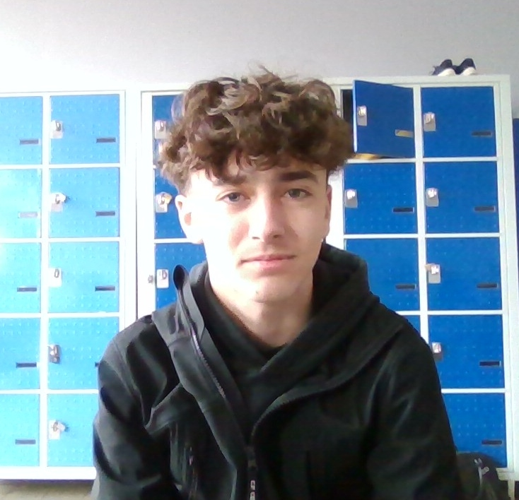

Charles Lempire
- Age:16 ans
- Adresse:403 Allée des primevères Bondues 59910
- Tel:0671847410
- E-mail:charles.lempire@lasallelille.com
Formation
- 2025-2026:Seconde générale LaSalle Lille
- 2021-2024:Brevet Collège Institution La Croix Blanche Mention Assez Bien
Expérience
Séjours linguistiques
- 2023:Trois semaine à Miami
- 2024:Une semaine à Dubai
- 2024:Une semaine en Island
- 2025:Une semaine en Thailand
- 2025:Deux semaine à Ibiza
Stages d'observation en entreprise
- Décembre 2024: Kiné du sport et vendeur au sein du garage Porsche Lille
- Février 2026: Vendeur au sein du garage Audi Lille
Certificats
Activités et centre d'interet
- sports
- la musique
- voyages
Profil
- curieux
- empathique
- a l'écoute
- créatif
Langues
Education
- primaire et collège Institution la Croix Blanche
- Lycée Ozanam
- Lycée LaSallelille